Artwork
I love art. I love creating. I love seeing the world. I've tried lots of different kinds of art and I have lots more that I still want to try. My favorite is 3d modeling and texturing (maybe because this requires the least physical skill). But I also like figure drawing, digital sketching, videography, and photography. If you want to see some of my short films, check out the videos page.
Sack of Flour (2016)
A brief animation made in toon boom I made for a university animation class. I learned about the 12 principles of animation and how a story can be told with just minimal sketches and 14 seconds.
Astronaut (2017)
A character modeled, textured an animated in Blender. Originally, it was for a game I was making with a friend. You can read more about that here. This is the artwork that I am most proud of and I put a lot of work into it. I learned a ton about the process of character design thanks for my friend Justin. First I modeled a low poly model, then sculpted a high poly model for baking normal maps, then created the textures, finally rigging and animating him.
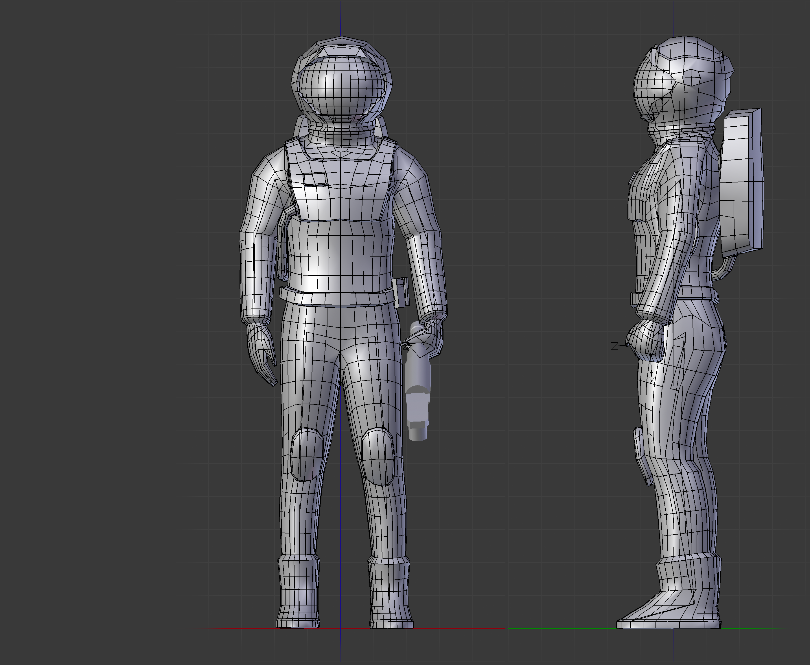 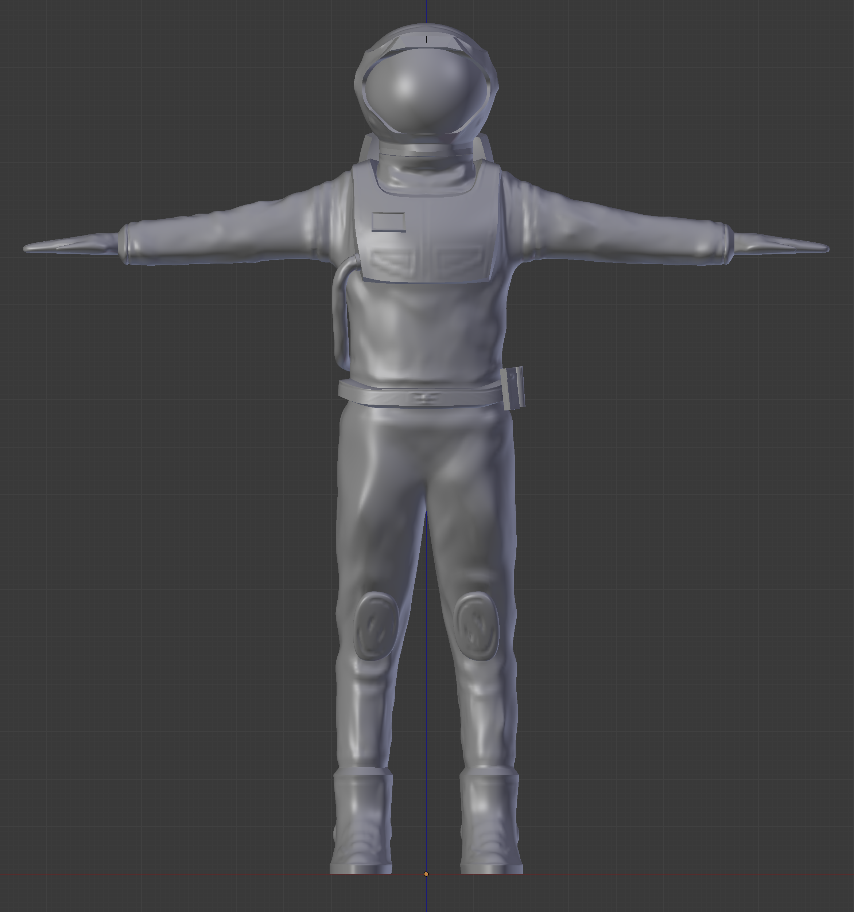 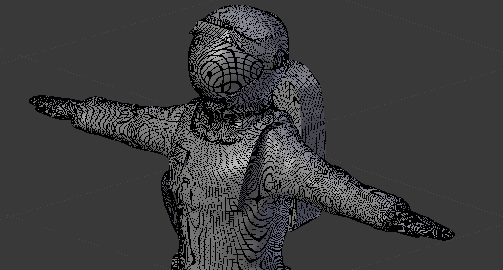 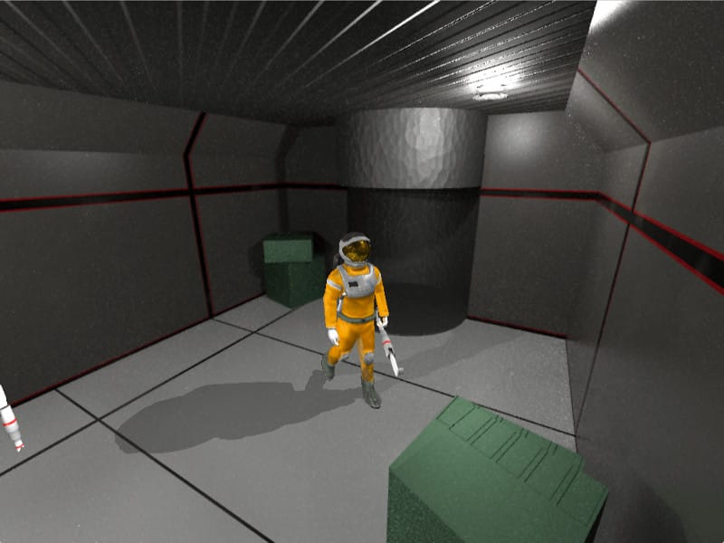
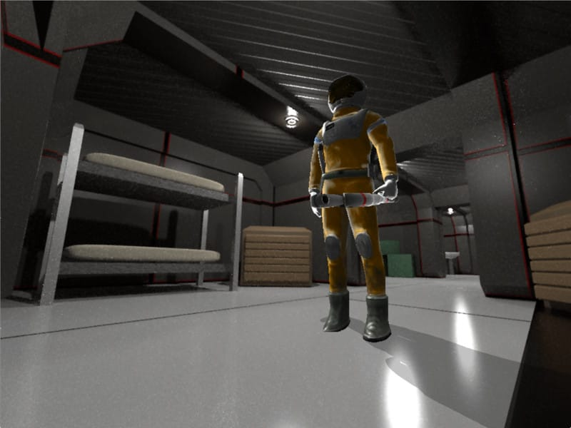
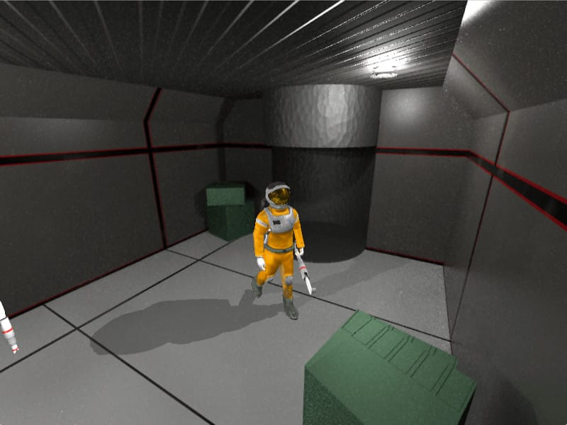
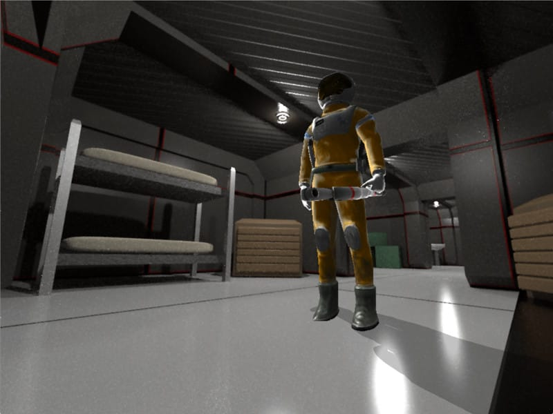
Self Sketch (2020)
It had been a while since I had done any skecthing and I wanted to do a quick sketch of myself. It turned into this digital artwork and although it doesn't look very much like me, I had fun and I'm proud of it.
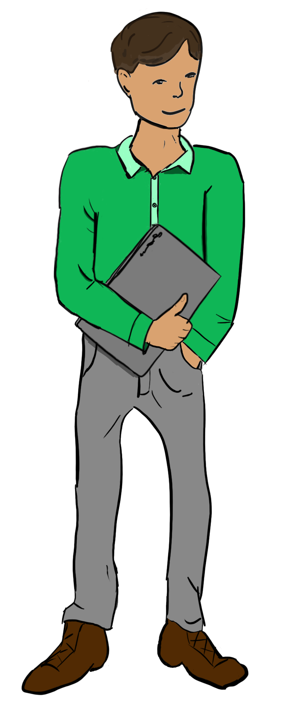Cartoon Line Drawing (2017)
This is a work I copied as a study to learn better line drawing. Drawn with nip and ink, I learned a little more about proper shading and how critical each individual line is to the work as a whole.
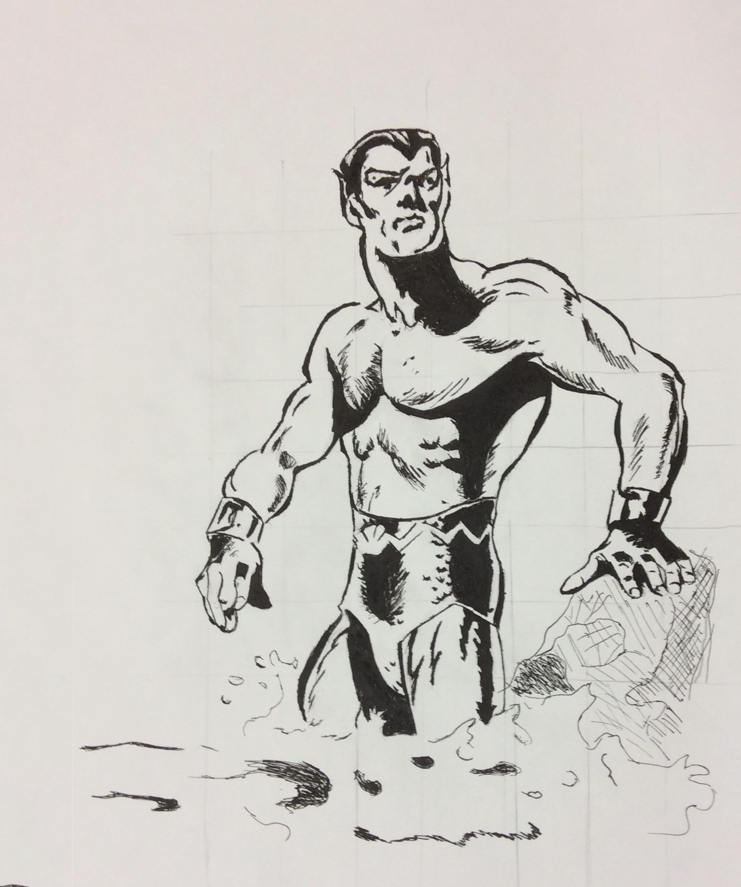Chubby Insect (2013)
The first serious 3d model I made. The background scene is one of Andrew Price's. This project taught me a lot about realistic modeling. At first, all the different parts of his body weren't meshing very aesthetically. At first, I just had twigs stickign out of his body. I learned how to make more realistic models that could merge together to create a better looking final model. Although it's not a great model or piece of art, I like it because it reminds me where I started out at.

Gold Plates
A 3d-scene made for a university religion class. This project led me into reading a lot about the difference between dialectric and diffuse materials. I also took a short dip into cloth simulations although I'm not proud of how my cloth turned out in this project.
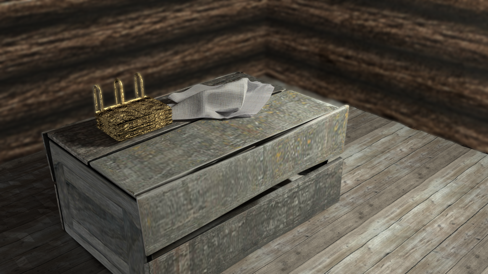AAA Shuffle Game
Made fully in blender as a work project to be shown at BYU University Basketball games in front of 18 thousand people. This project taught me how to make smoother and fluid motion with easing in and easing out transitions. I'm proud of my procedurally generated brushed steel texture in this project.
Figure Drawings
A couple of figure drawings from a university class. I'm still not very good at figure drawing but I really loved learning how to see the curves of the human body and the assymetry it has. Email me if you want to see more of my sketches or line/figure drawings.
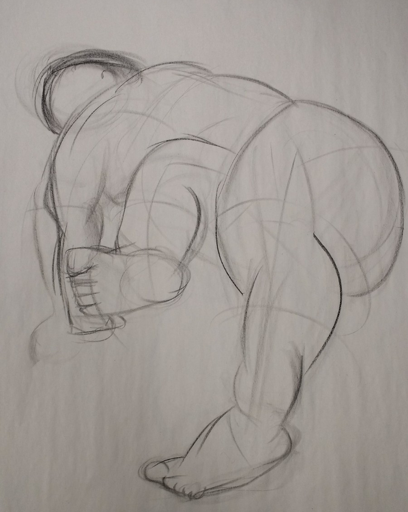 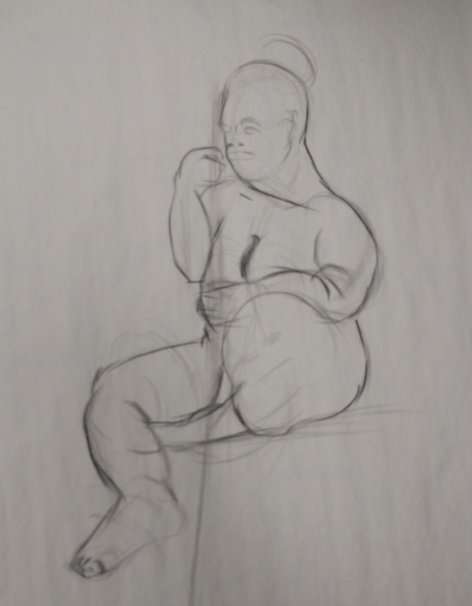
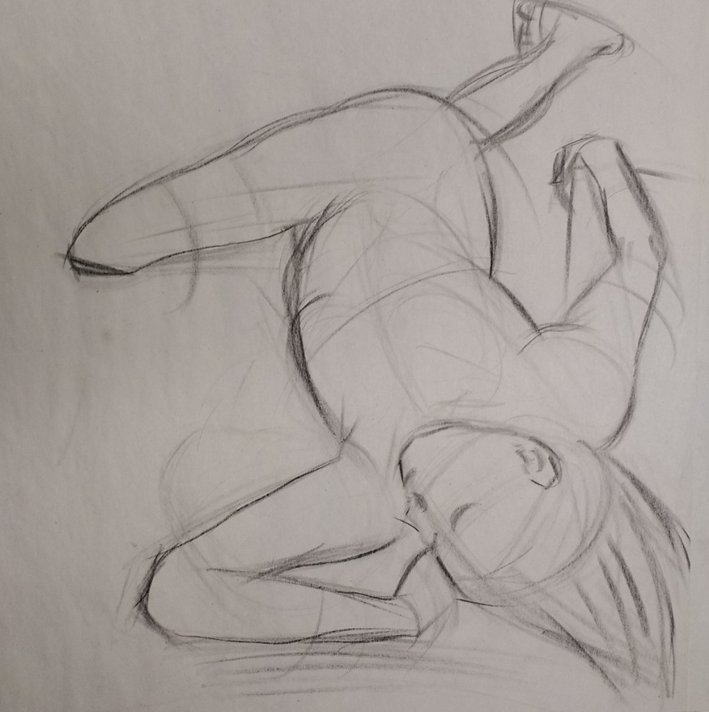
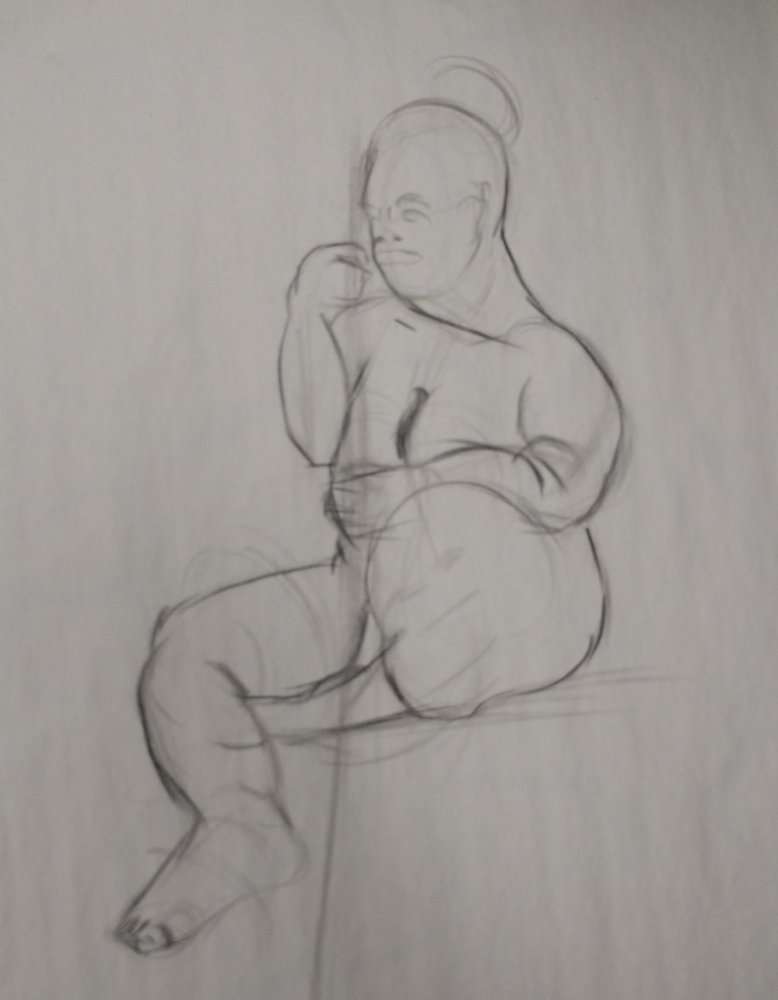
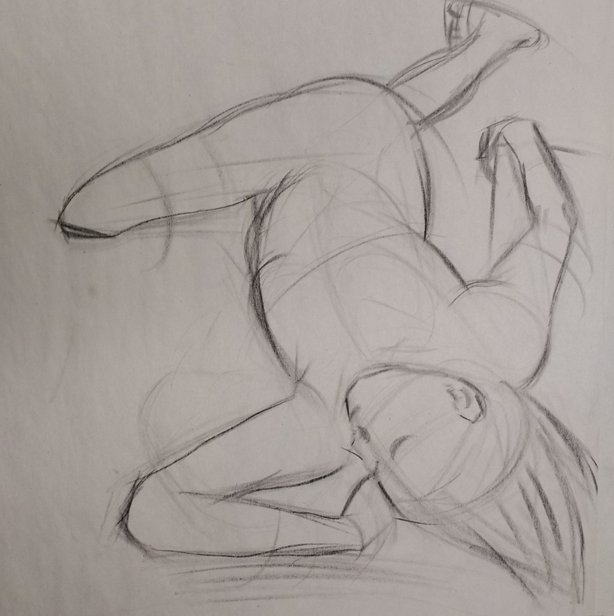